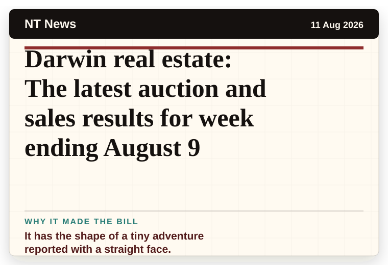
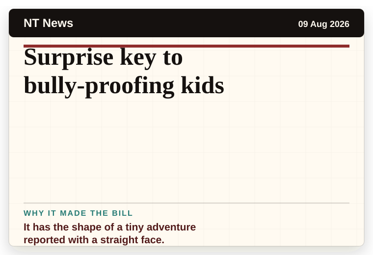
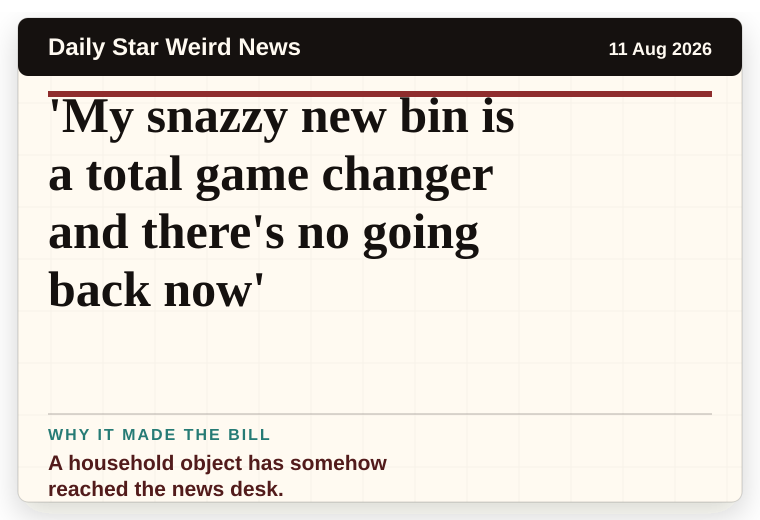
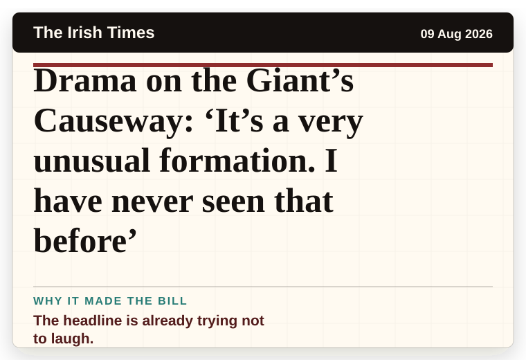
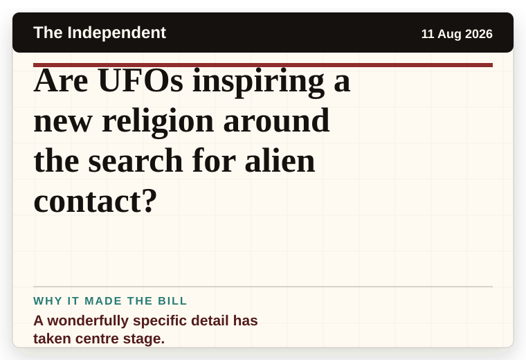
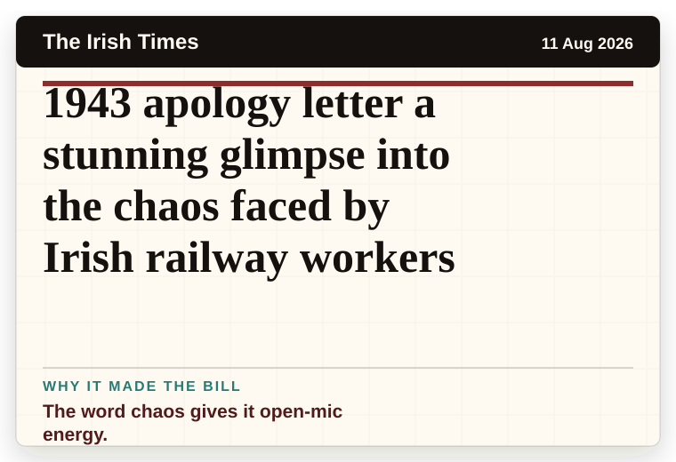
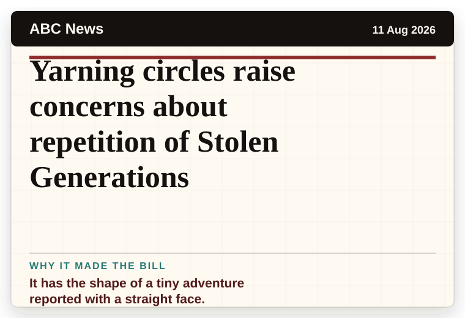
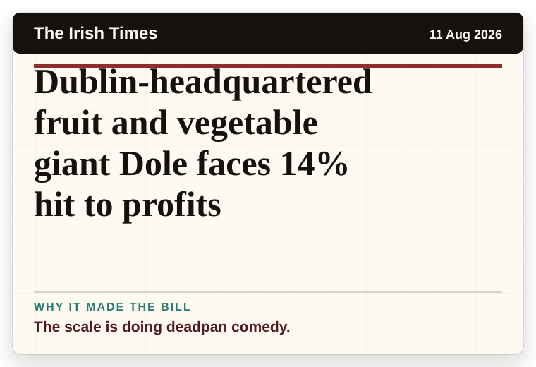
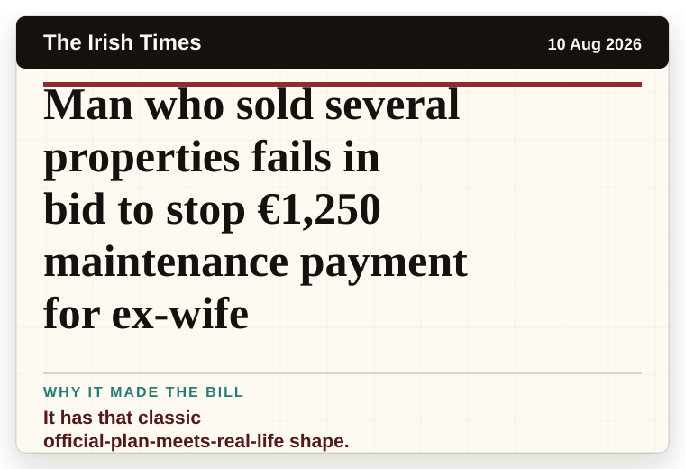

NT News
Australia
Darwin real estate: The latest auction and sales results for week ending August 9
It has the shape of a tiny adventure reported with a straight face.
The latest daily picks, linked back to the original sources. Search the room, pick a source, or follow a headline out to the full story.
Record updated: 11 Aug 2026, 07:49 AM AEST
Showing 13 headline candidates from the refresh run completed on 11 Aug 2026, 07:49 AM AEST.

It has the shape of a tiny adventure reported with a straight face.

It has the shape of a tiny adventure reported with a straight face.

A household object has somehow reached the news desk.

A wonderfully specific detail has taken centre stage.

A wonderfully specific detail has taken centre stage.

The headline is already trying not to laugh.

It has the shape of a tiny adventure reported with a straight face.

A wonderfully specific detail has taken centre stage.

The question mark makes it feel like the host has paused for the room.

The word chaos gives it open-mic energy.

It has the shape of a tiny adventure reported with a straight face.

The scale is doing deadpan comedy.

It has that classic official-plan-meets-real-life shape.